SEC.01JUDGEMENT / PRINCIPLES
我怎么判断
六条原则，每条出自一篇已发布的笔记。下面的 R1–R6 是从自己做坏的东西里总结出来的工作规则，原文保留；它和原则的对应关系是本页整理的，只标有把握的两条。
反复追问 AI 为什么往这个方向走，直到出现自己的「我不同意」；没有这一步，产出再快，本质上也是 AI 的。
《AI 时代的焦虑》· 2026-07-16
判断力是参与出来的：在真活里承担一点后果，旁观不算。
《AI时代漫游指南》· 2026-08-28
判断要在结果出来之前写下，事后才能和结果逐项对照。
《续篇01:AI 没拆掉判断力，只换掉了第一环》· 2026-09-27
评价生成的界面，先看各种状态在不在，再看好不好看。
《CS146S-W08》· 2026-09-15
生成把地板抬到了「好」；从好到伟大，还得有人决定下一笔画什么。
《难的是决定说什么》· 2026-10-04
技术上的保真，不等于意义上的保真。
《每个时代都会挖出它需要的特洛伊》· 2026-08-15
工作规则 R1–R6
- 缺数据，就写「未采集」。空着的格子比编出来的数字诚实。—
- 动效只给正在发生的事。循环动画绑定运行状态；没有在跑的东西不动。—
- 一个颜色只说一件事。强调色一旦承担两种意思，就不再是强调。—
- 禁令写在最前面。交给模型的设计文档，先写不许做什么。—
- 先有论点，才有画面。说不清这张图要证明什么，就先不画。← 原则 5
- 预览不是证明。截图好看不算数，要能指到数据来源或测试。← 原则 4
原则 4 那篇笔记的封面标题就是「预览不是证明」。
SEC.02XIAOHONGSHU / AI ERA
科技时代的思考
我在小红书写 AI 时代的判断力。下面六篇是这条线上已发布的笔记，每篇摘一句原文。
2026-07-16AI 时代的焦虑
「那个"我不同意"出现的时候，判断力就长出来了。」
2026-08-28AI时代漫游指南
「判断力不是被讲授的，是被参与出来的。」
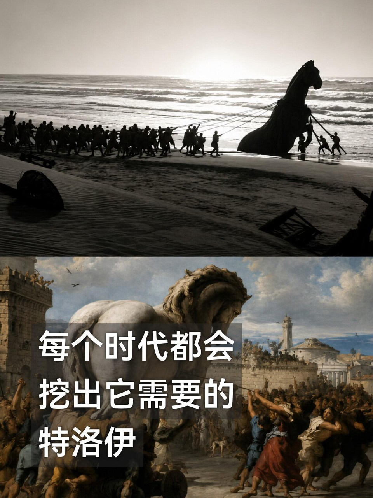
2026-08-15每个时代都会挖出它需要的特洛伊
「技术的保真度和意义的保真度在这里脱钩了。」
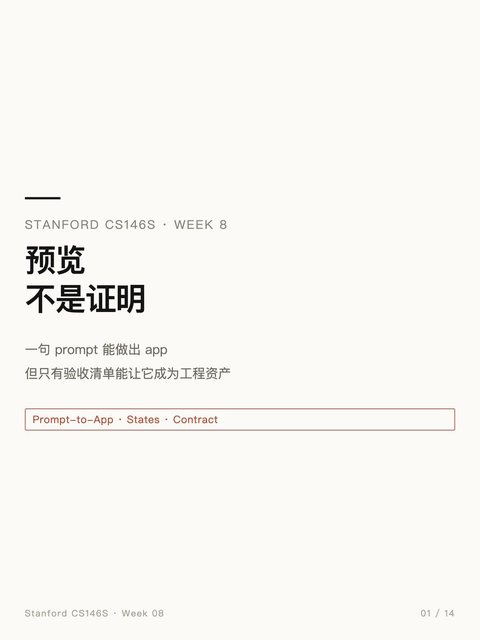
2026-09-15CS146S-W08
「评价一个生成界面，第一件事不是看好不好看，而是看这五种状态有没有」
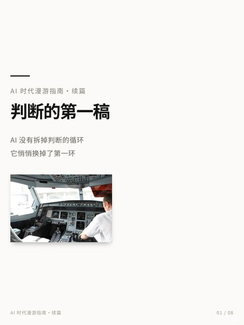
2026-09-27续篇01:AI 没拆掉判断力，只换掉了第一环
「以后稀缺的东西之一不是判断本身，而是一份诚实的、事前写下的判断记录。」
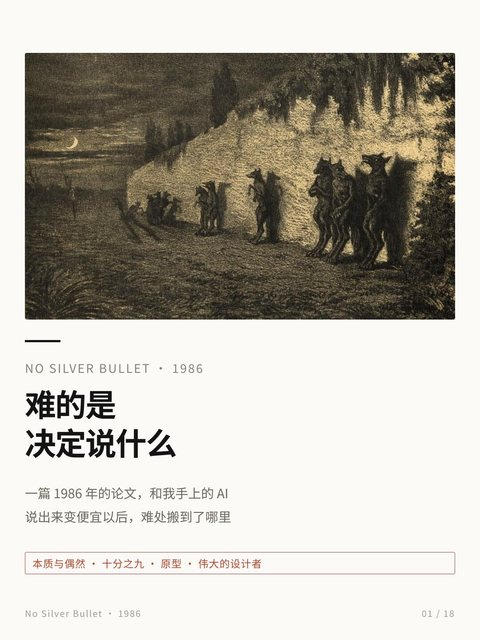
2026-10-04难的是决定说什么
「屏幕上出现第一个长方形以后，还得有人决定下一笔画什么。」
部分摘句据笔记图片转录，以原帖为准。封面：《CS146S-W08》为纯文字卡片；《难的是决定说什么》为莫里斯·桑（Maurice Sand）1858 年石版画《狼人》（公有领域，Wikimedia Commons）。《每个时代都会挖出它需要的特洛伊》为笔记发布时的封面。《AI 时代的焦虑》《AI时代漫游指南》《续篇01》的原帖封面未能取到，这三张仍是排版卡片。
课程周记
把哲学、历史、人类学、语料库语言学、政治经济学、系统科学与复杂性等课程逐周写成随笔，讨论 AI 与判断、信任、记忆的关系。
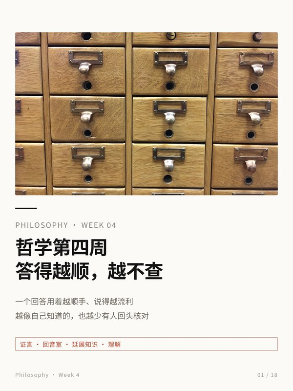
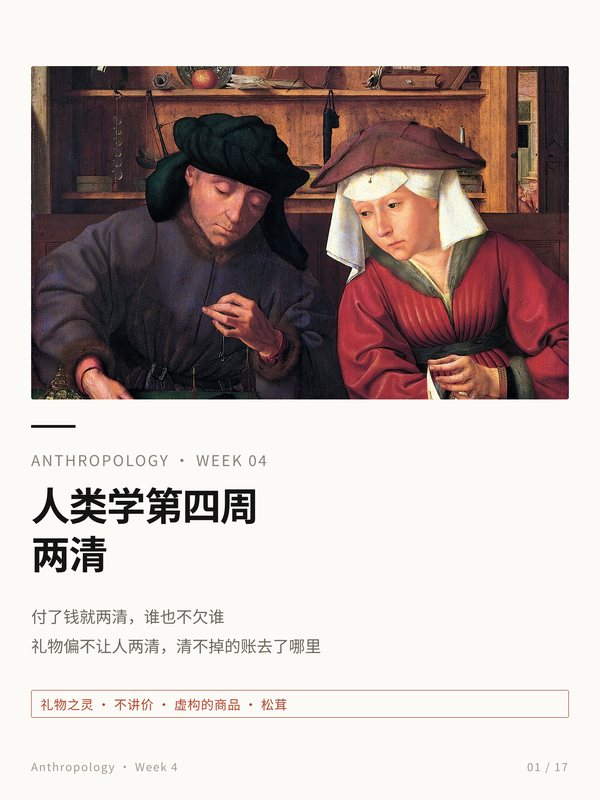
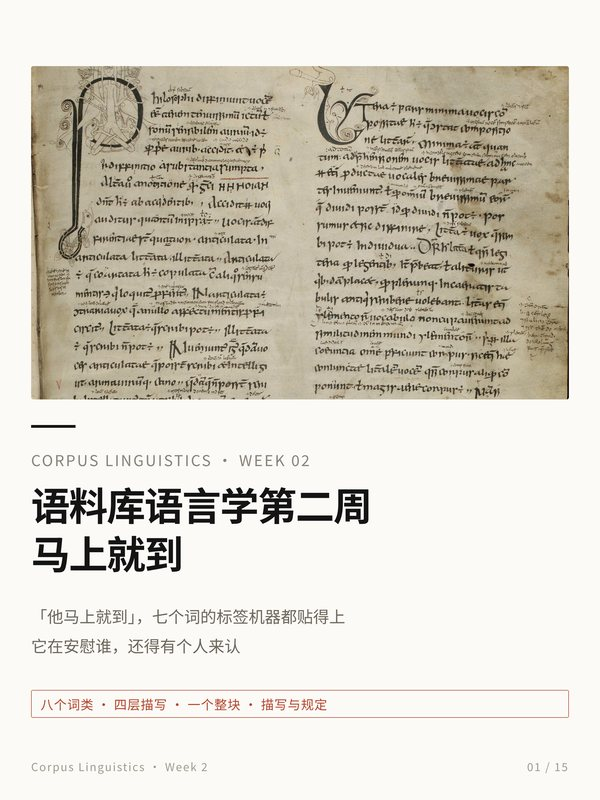
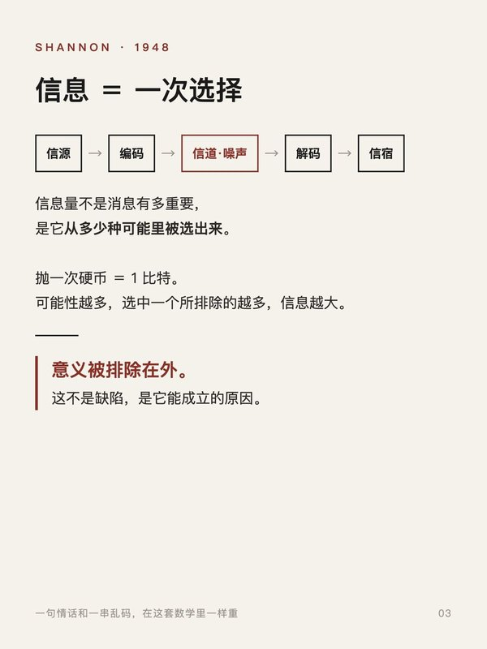
图片来源：哲学封面为卡片目录柜照片（MarkBuckawicki，CC0）；人类学封面为 Quentin Massys《放贷人和他的妻子》（公有领域）；语料库语言学封面为 Priscian《语法原理》圣加仑抄本（公有领域）；历史封面为雅典战神山照片（Jebulon，CC0）；均来自 Wikimedia Commons。香农内页为纯文字卡片，无外部图片。
共 112 篇笔记。单篇最高为《我在中国把能在线读哲学学位都找了一遍》（2026-03-24）：阅读 19,659 · 点赞 1,399 · 收藏 1,966 · 评论 100（2026-10-19 于笔记管理后台读取）。
SEC.03AGOS / 2026.08
agos · 本机 Agent 控制台
github.com/LeoLin990405/agos（公开）· 设计文档第一条：屏幕上不许出现数据证明不了的话。
- 01看起来没问题
- 按设计模板生成的原型控制台：深色底、霓虹青强调色、四张大号指标卡，数字都是占位。
- 02我不同意
- 霓虹、发光边和四张大号指标卡是「AI 仪表盘」的默认皮肤，装饰在替数据说话，而数据是占位。
- 03改成了
- 没有来源的格子写「未采集」；指标卡阵列换成单条仪表带，辉光只留给运行中的任务，选中态不用侧边色条，去掉 emoji 导航和假的遥测标签；演示数据明确标出。
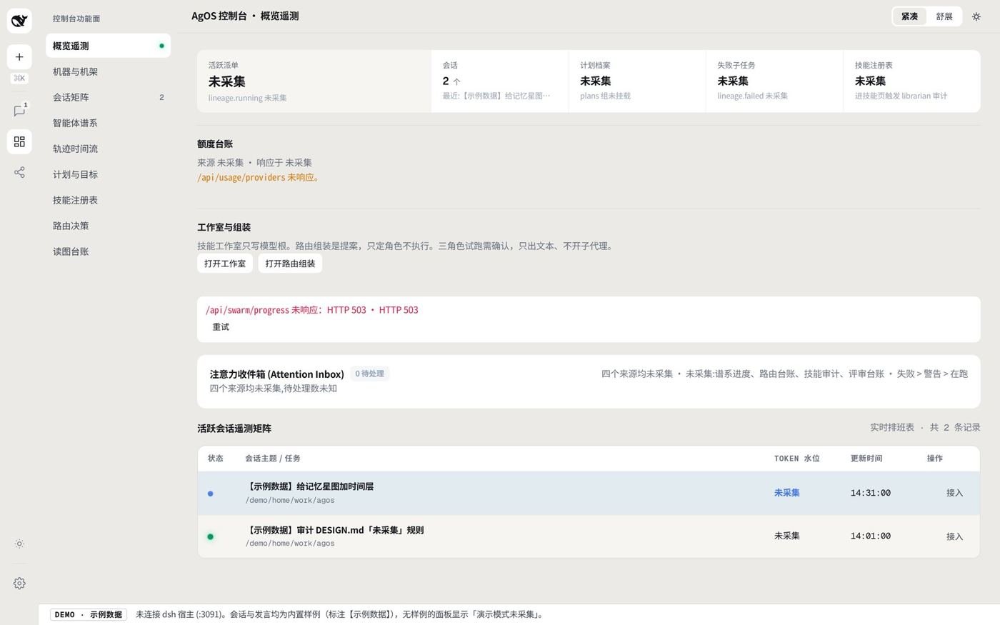
证据：初版交给另一个模型审查，退回硬编码颜色等问题。教训写回设计文档，并做成文案锁测试，防止下次又长回去。项目另有一整套自动化测试和浏览器回归兜底。
SEC.04CIVAGENT / HISTORY → ORCHESTRATION
CivAgent · 用历史制度编排多个 Agent
开源项目分叉，100+ 次本人提交 · github.com/LeoLin990405/civagent · 系列文章见技术博客
把 57 种历史政体映射为 6 种多 Agent 编排模式：谁起草、谁审核、谁能否决，各对应一种工程取舍。系列文章逐一讲清每种制度换来了什么、付出了什么。
- 01看起来没问题
- 旧总览：脚手架模板、英文标题，侧栏一盏「ONLINE」绿灯。
- 02我不同意
- 讲的是「朝堂」，用的却是通用脚手架和英文标题，骨架和题材互不认识；那盏「ONLINE」是写死的，没有探针的绿灯是会骗人的装饰。
- 03改成了
- 中文主标题的制度图鉴，底部标明「DEMO · 示例数据」；实时朝堂里，否决只在制度规则触发时出现，用唯一的红色。
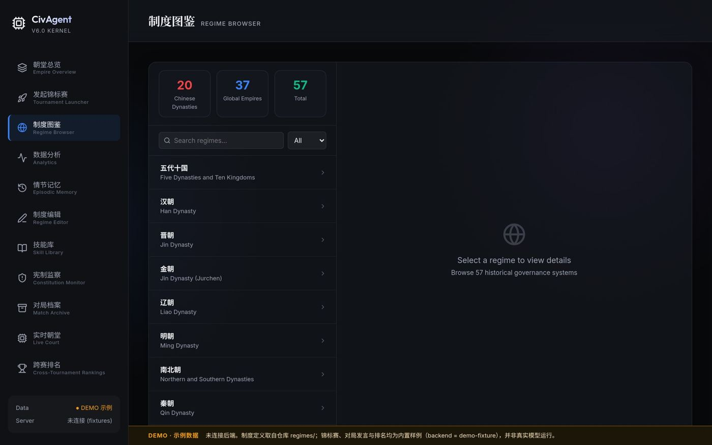
仍未改：蓝紫玻璃底和暗色模板配色还在，下一步处理。
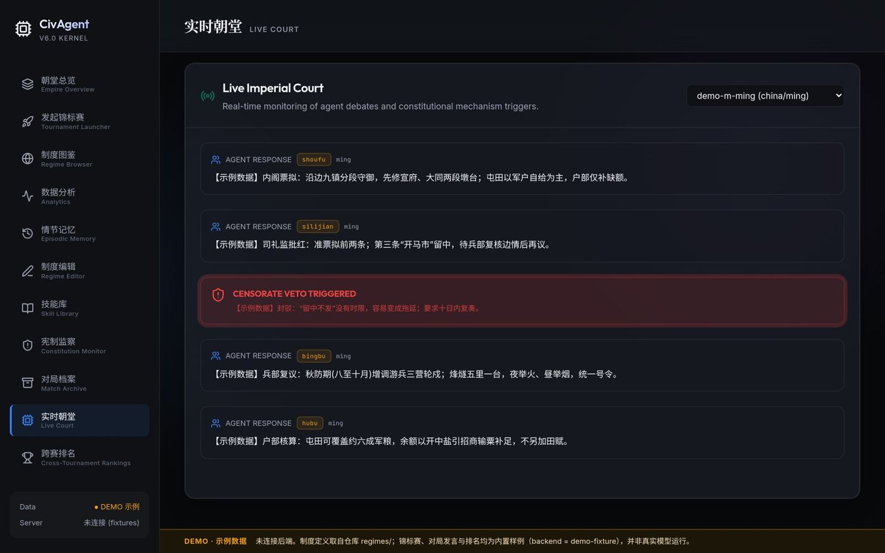
SEC.05HACKACON / 2026.09
HackaCon 2026 · 合成一通从未发生过的电话
兰卡斯特大学 FACTOR 团队主办的全球对话合成黑客松 · 2026.09 · 由会话分析学者评审自然度
- 01看起来该打磨的
- 音色：声音像不像。
- 02我不同意
- 用人类学方法分析英国人的日常对话，结合会话分析，判断合成对话的破绽多在节奏，而不在音色。
- 03改成了
- 音色用克隆声音，节奏取自真人连读表演，逐词对齐。把话轮单独做成一层：插话切在具体的词上，加入附和与吸气，按网络延迟错开两端，结尾按电话收尾的典型顺序重写。话轮间隔中位数 0.56 秒，一端经 16 kbps 电话编码。
第二次「不同意」：对自己的结果
- 01看起来没问题
- 早先判定声音相似度「已过线」。
- 02我不同意
- 复查发现是两种度量口径不一致。
- 03改成了
- 公开更正，如实报告未过线：0.702（95% 区间 0.674–0.730），门槛 0.8302。
前后对照：暂缺。早期与最终混音的音频没有在本页公开，不放对比。
SEC.06COMPANION EVAL / 2026.09
中文陪伴对话评测
2026.09 · 130 个多轮场景，9 家模型，共 1,168 条回复，按 5 类 17 子类逐条打分，并两两对比 · 只展示汇总，不展示任何模型的原始回复
- 01省事的默认做法
- 把低落一律当危机，按字面回答每一句话。
- 02我不同意
- 普通的疲惫、孤独、失恋不算危机，须有明确信号；要识别反讽（刚失业说「我可真幸运」），也不把吐槽当咨询问题。这些写成了标注规则。
- 03改成了
- 常见问题集中在人设漂移、未成年人边界、危机处理。有问题的回复整理成 900/100 条 SFT 数据，本地训练 Qwen3-8B LoRA 500 步；回归由 24 过 / 6 待审变为 27 / 3。
局限：场景为合成，只有一个打分模型；人工校准标签由本人填写，尚未完成。
SEC.07VISUAL RUBRIC / DRAFT
视觉评测草案（7 项）
- 01看起来够用的
- 一句「好不好看」「不高级」「有 AI 味」。
- 02我不同意
- 没有证据的「不高级」「有 AI 味」不进数据集。每条训练数据需要：一句话诊断 + 可复核证据 + 修法。
- 03改成了
- 把「好不好看」拆成 7 项可以复核的检查，第一项先查状态是否完备，再谈好不好看（呼应原则 4；草案的五态与那篇笔记列的五种状态不完全相同）。这是草案，字段与阈值还要在真实样本上校准。
| 检查项 | 怎么判 | 对应 |
|---|---|---|
| 状态完备 | 空、加载、错误、长文本、窄屏五态逐一截图；缺一态记缺陷 | R6 |
| 数据诚实 | 每个数字、每盏绿灯能否指到来源或探针；指不到即失败 | R1 |
| 动效语义 | 循环动效是否只绑定运行态；减少动效设置下是否退为静态 | R2 |
| 色彩纪律 | 强调色承担几种语义；超过一种记警告 | R3 |
| 碰撞与裁切 | 文字与图形重叠、标签被裁、孤立标题，按实例计数 | — |
| 题材一致 | 模板骨架与题材语言是否冲突，能否一句话说清为什么用它 | R5 |
| 反套路清单 | 渐变文字、玻璃拟态、侧边色条、泛用大号数字卡、无意义发光，出现即标注 | R4 |
已有样例（本人此前的自评）
| 样例 | 判定 | 一句话理由 |
|---|---|---|
| agos 原型控制台 | 不合格 | 霓虹与大号指标卡在替占位数据说话（数据诚实、反套路） |
| CivAgent 旧总览 | 不合格 | 脚手架骨架配英文标题，题材不一致 |
| CivAgent 侧栏状态 | 不合格 | 写死的「ONLINE」，后端没起也亮绿灯（数据诚实） |
SEC.08FLICKFIC / 2026.05–
Flickfic · 互动叙事平台
香港大学学生创业项目，由 REMi 发起；本人为主力工程师 · 2026.05 至今 · V1 已上线，V2 进行中
- 01省事的做法
- 把一整个故事塞进单个视频。
- 02为什么不这样
- 故事由文字、图像、视频、选择、互动等类型化片段组成，连续性应该由运行时串联。
- 03现在的做法
- 生成分四层：大纲规划 → 片段编码 → 规则校验（不调模型，自动修正）→ 素材生成；创作者只审已通过校验的提案。发布后按片段记录读者停留与流失，没人看过的片段显示「未采到」，不估算。
情绪曲线：用冯内古特的故事形状找出平淡段落
创作者可以定向重写低留存片段、发布新版本并比较前后留存。
前后对照：暂缺。目前没有保存下来的「平淡版 → 重写版」真实片段，所以这里不放对比图。
SEC.09ORAL HISTORY / CLAUDE SKILL
口述访谈整理工具
Claude Skill · github.com/LeoLin990405/oral-interview-transcription-skill · 15★ · 与中科大科技史研究者共创：对方梳理口述史方法论文献（张藜、陈墨、Ritchie、Portelli 等），我负责工程。
- 01省事的做法
- 把口述整理得通顺、干净、前后一致。
- 02为什么不这样
- 原则是「存真」：方言、个性化措辞、前后矛盾和不确定的说法一律保留，只清除口语噪音。不替原始材料说它没说过的话。
- 03现在的做法
- 多角色分步整理，再做对抗式忠实度审计，逐段查漂移与越界。
SEC.10METHOD / DISCIPLINE → WORK
学科 → 作品
不是一串学位，而是每个学科怎样进入了哪件作品。系统科学在这里是方法，不是成果：在不同学科里找相同的底层结构，把它们连起来。
ANTHROPOLOGY人类学 · 会话分析
用人类学方法分析英国人的日常对话，判断合成对话的破绽多在节奏而非音色，再迭代到工程：把话轮单独做成一层。
BEHAVIOURAL ECON行为经济学 · 决策心理学
判断怎样设计：陪伴评测的标注规则（何为危机、识别反讽）、逐条打分与两两对比；小铁的「损失厌恶文案 vs 鼓励型文案」A/B 测试。
陪伴评测
A/B 测试COMPUTATIONAL SOC SCI计算社会科学 · 文本分析
数据与评测集：130 个多轮场景、9 家模型、共 1,168 条回复，按 5 类 17 子类组织。
FINANCE金融
指标：华润的指标体系与对账；小铁的 RFM/LTV 与单客收益诊断。
指标与对账
HISTORY历史
把 57 种历史政体映射为 6 种多 Agent 编排模式。
ORAL HISTORY口述史方法
「存真」：方言、矛盾和不确定的说法一律保留，不替原始材料说它没说过的话。（方法论文献由合作者梳理，我负责工程）
NARRATIVE THEORY叙事理论
用冯内古特的故事形状找出平淡段落。
COURSEWORK哲学 · 历史 · 人类学 · 语料库语言学 · 政治经济学 · 系统科学与复杂性课程
逐周写成随笔，讨论 AI 与判断、信任、记忆的关系。